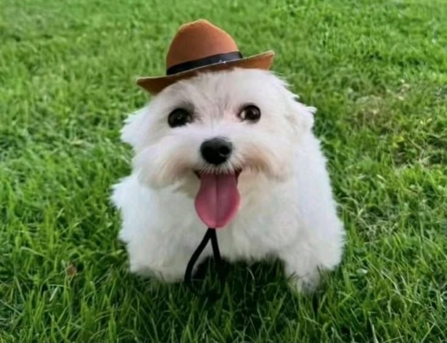
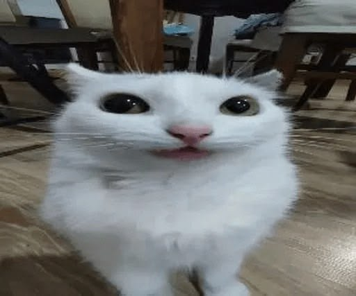
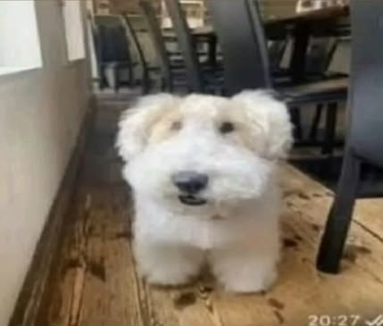

El objetivo principal de la protectora es ofrecer atención integral a los animales rescatados,
garantizando su salud, bienestar y la búsqueda de familias adoptivas responsables.

Masita
Bichón maltés
Edad: 3 años

Leo
Gato común europeo
Edad: 4 años

Copito
West Highland White Terrier
Edad: 2 años